Sensivity analysis by Fourier decomposition¶
FAST is a sensitivity analysis method which is based upon the ANOVA decomposition of the variance of the model response
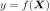
, the latter being represented by its Fourier expansion.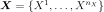
is an input random vector of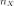
independent components.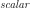
parameter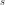
, by defining parametric curves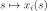
,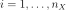
exploring the support of the input random vector .
.Sampling:
Deterministic space-filling paths with random starting points are defined, i.e. each input
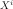
is transformed as follows: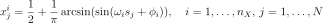
where is the number of input variables.
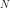
is the length of the discretization of the s-space, with varying in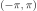
by step of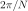
.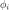
is a random phase-shift chosen uniformly in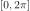
which enables to make the curves start anywhere within the unit hypercube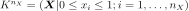
. The selection of the set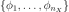
induces a part of randomness in the procedure. So it can be asked to realize the procedure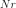
times and then to calculate the arithmetic means of the results over the estimates. This operation is called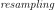
.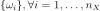
is a set of integer frequencies assigned to each input . The frequency associated with the input of interest is set to the maximum admissible frequency satisfying the Nyquist criterion (which ensures to avoid aliasing effects):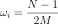
with
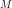
the interference factor usually equal to 4 or higher. It corresponds to the truncation level of the Fourier series, i.e. the number of harmonics that are retained in the decomposition realized in the third step of the procedure.In the paper [saltelli1999], for high sample size, it is suggested that
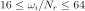
.And the maximum frequency of the complementary set of frequencies is:
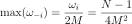
with the index ’
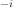
’ which meaning ’all but ’.
’.
The other frequencies are distributed uniformly between
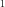
and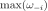
. The set of frequencies is the same whatever the number of resamplings is.Let us make an example with eight input factors,
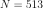
and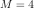
i.e.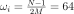
and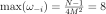
with the
index of the input of interest.
When computing the sensitivity indices for the first input, the considered set of frequencies is :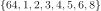
.When computing the sensitivity indices for the second input, the considered set of frequencies is :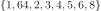
.etc.The transformation defined above provides a uniformly distributed sample for the
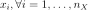
oscillating between and . In order to take into account the
real distributions of the inputs, we apply an isoprobabilistic
transformation on each
and . In order to take into account the
real distributions of the inputs, we apply an isoprobabilistic
transformation on each 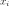
before the next step of the procedure.Simulations:
Output is computed such as:
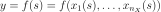
Then
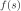
is expanded onto a Fourier series: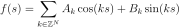
where
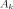
and are Fourier coefficients defined as follows: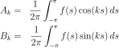
These coefficients are estimated thanks to the following discrete formulations:
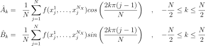
Estimations by frequency analysis:
The first order indices are estimated as follows:
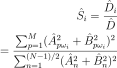
where
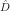
is the total variance and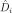
the portion of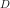
arising from the uncertainty of the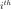
input. the size of the sample using to compute the Fourier series and is the interference factor. Saltelli et al. (1999) recommanded to set to a value in the range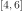
.The total order indices are estimated as follows:
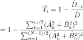
where
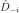
is the part of the variance due to all the inputs except the input.
API:
See
FAST
Examples:
References: